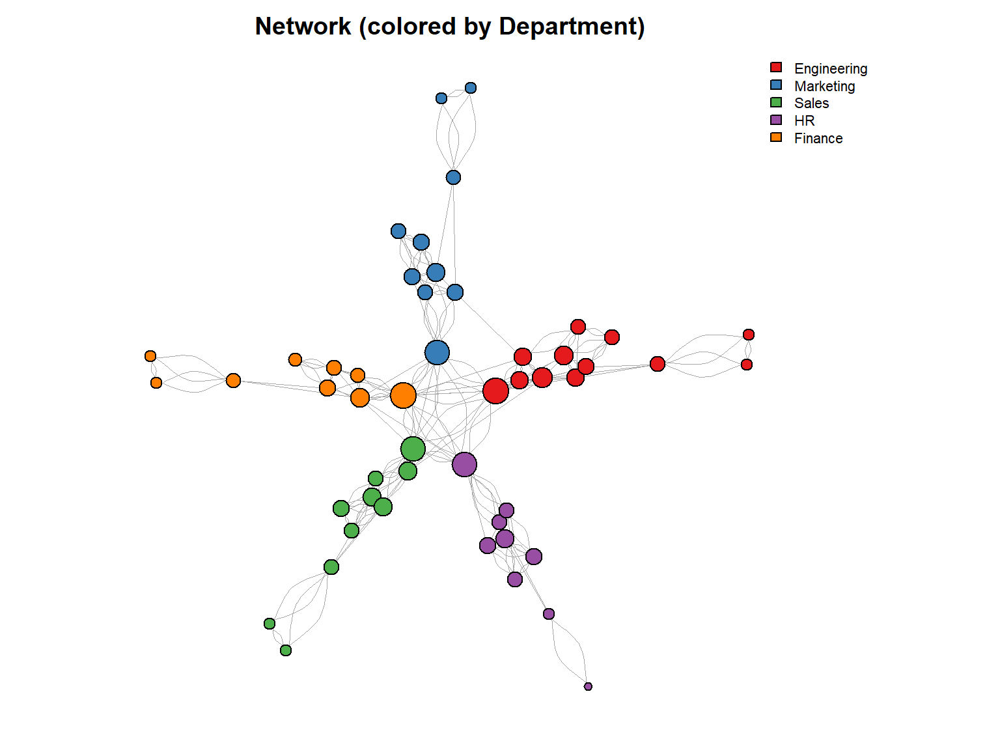
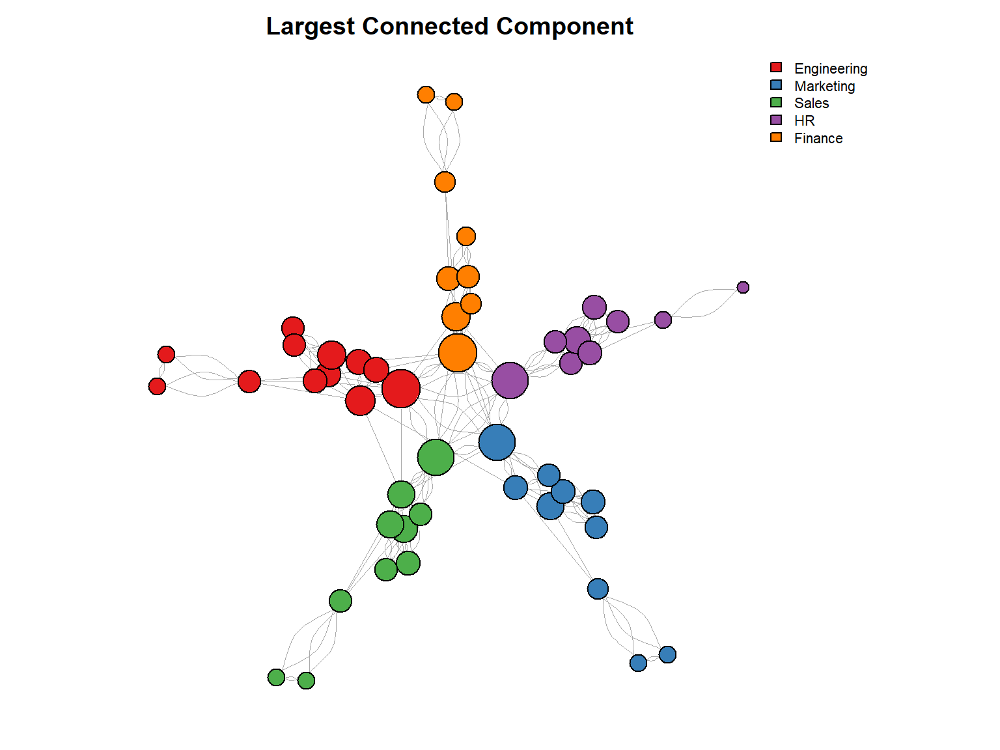
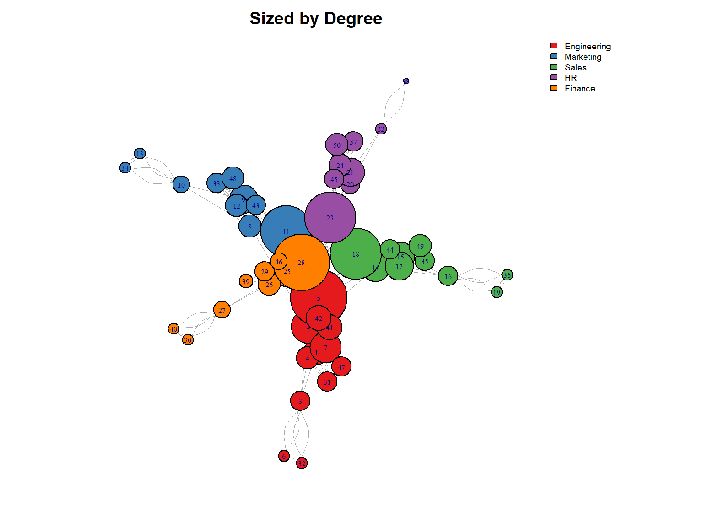
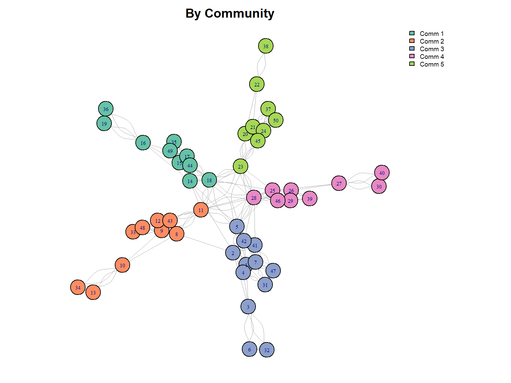

library(dplyr)
library(tibble)
employees <- read.csv("data/employees.csv")DBA3702 Assignment 1
Part 1: Data Wrangling with dplyr (45 points)
Question 1.1: Data Exploration (5 points)
a) Load packages and read data
b) Convert to tibble and display first 10 rows
employees <- as_tibble(employees)
print(employees, n = 10)# A tibble: 50 × 8
employee_id name department role years_exp salary performance_score
<int> <chr> <chr> <chr> <int> <int> <dbl>
1 1 Alice Chen Engineeri… Seni… 8 95000 4.5
2 2 Bob Martinez Engineeri… Lead 12 120000 4.8
3 3 Charlie Kim Engineeri… Juni… 2 65000 3.8
4 4 Diana Patel Engineeri… Seni… 7 92000 4.2
5 5 Eve Thompson Engineeri… Mana… 15 140000 4.6
6 6 Frank Liu Engineeri… Juni… 1 58000 3.2
7 7 Grace Okonkwo Engineeri… Seni… 9 98000 4.4
8 8 Henry Wang Marketing Lead 10 105000 4.3
9 9 Iris Nakamura Marketing Seni… 6 82000 3.9
10 10 Jack Brown Marketing Juni… 2 55000 3.5
# ℹ 40 more rows
# ℹ 1 more variable: projects_completed <int>c) Data summary
cat("Rows:", nrow(employees), "\n")Rows: 50 cat("Columns:", ncol(employees), "\n")Columns: 8 sapply(employees, typeof) employee_id name department role
"integer" "character" "character" "character"
years_exp salary performance_score projects_completed
"integer" "integer" "double" "integer" summary(employees) employee_id name department role
Min. : 1.00 Length:50 Length:50 Length:50
1st Qu.:13.25 Class :character Class :character Class :character
Median :25.50 Mode :character Mode :character Mode :character
Mean :25.50
3rd Qu.:37.75
Max. :50.00
years_exp salary performance_score projects_completed
Min. : 1.00 Min. : 48000 Min. :2.900 Min. : 2.00
1st Qu.: 3.00 1st Qu.: 65750 1st Qu.:3.600 1st Qu.: 6.00
Median : 6.50 Median : 85000 Median :4.000 Median :11.50
Mean : 6.68 Mean : 86420 Mean :3.970 Mean :12.24
3rd Qu.: 9.00 3rd Qu.:101500 3rd Qu.:4.375 3rd Qu.:17.00
Max. :16.00 Max. :145000 Max. :4.900 Max. :30.00 The dataset includes information about 50 employees with 8 variables. This includes basic information, such as employee name and department, as well as quantitative information, such as salary, years of experience, performance scores, and number of projects completed.
Question 1.2: Selecting and Filtering (8 points)
d) Select specific columns
employees %>%
select(name, department, role, performance_score)# A tibble: 50 × 4
name department role performance_score
<chr> <chr> <chr> <dbl>
1 Alice Chen Engineering Senior 4.5
2 Bob Martinez Engineering Lead 4.8
3 Charlie Kim Engineering Junior 3.8
4 Diana Patel Engineering Senior 4.2
5 Eve Thompson Engineering Manager 4.6
6 Frank Liu Engineering Junior 3.2
7 Grace Okonkwo Engineering Senior 4.4
8 Henry Wang Marketing Lead 4.3
9 Iris Nakamura Marketing Senior 3.9
10 Jack Brown Marketing Junior 3.5
# ℹ 40 more rowse) Filter performance > 4.0
high_performers <- employees %>%
filter(performance_score > 4.0)
high_performers# A tibble: 23 × 8
employee_id name department role years_exp salary performance_score
<int> <chr> <chr> <chr> <int> <int> <dbl>
1 1 Alice Chen Engineeri… Seni… 8 95000 4.5
2 2 Bob Martinez Engineeri… Lead 12 120000 4.8
3 4 Diana Patel Engineeri… Seni… 7 92000 4.2
4 5 Eve Thompson Engineeri… Mana… 15 140000 4.6
5 7 Grace Okonkwo Engineeri… Seni… 9 98000 4.4
6 8 Henry Wang Marketing Lead 10 105000 4.3
7 11 Kate Wilson Marketing Mana… 14 125000 4.5
8 14 Nathan Lee Sales Lead 11 115000 4.7
9 15 Olivia Davis Sales Seni… 8 88000 4.1
10 18 Rachel Green Sales Mana… 13 130000 4.4
# ℹ 13 more rows
# ℹ 1 more variable: projects_completed <int>cat("Count:", nrow(high_performers))Count: 23f) Engineering/Marketing with > 5 years experience
employees %>%
filter((department == "Engineering" | department == "Marketing") & years_exp > 5)# A tibble: 14 × 8
employee_id name department role years_exp salary performance_score
<int> <chr> <chr> <chr> <int> <int> <dbl>
1 1 Alice Chen Engineeri… Seni… 8 95000 4.5
2 2 Bob Martinez Engineeri… Lead 12 120000 4.8
3 4 Diana Patel Engineeri… Seni… 7 92000 4.2
4 5 Eve Thompson Engineeri… Mana… 15 140000 4.6
5 7 Grace Okonkwo Engineeri… Seni… 9 98000 4.4
6 8 Henry Wang Marketing Lead 10 105000 4.3
7 9 Iris Nakamura Marketing Seni… 6 82000 3.9
8 11 Kate Wilson Marketing Mana… 14 125000 4.5
9 31 Eric Zhang Engineeri… Seni… 6 88000 4
10 33 George Park Marketing Seni… 7 80000 3.7
11 41 Oscar Rivera Engineeri… Lead 11 118000 4.5
12 42 Paula Hughes Engineeri… Mana… 16 145000 4.9
13 43 Quentin Price Marketing Lead 8 100000 4.1
14 47 Ulrich Weber Engineeri… Seni… 7 94000 4.2
# ℹ 1 more variable: projects_completed <int>g) Select using helpers
employees %>%
select(contains("score") | starts_with("p"))# A tibble: 50 × 2
performance_score projects_completed
<dbl> <int>
1 4.5 15
2 4.8 22
3 3.8 5
4 4.2 12
5 4.6 28
6 3.2 3
7 4.4 16
8 4.3 18
9 3.9 11
10 3.5 4
# ℹ 40 more rowsThere are two columns, performance_score and projects_completed, that meet the given condition.
Question 1.3: Sorting and Ranking (7 points)
h) Top 5 highest-paid
employees %>%
arrange(desc(salary)) %>%
head(5)# A tibble: 5 × 8
employee_id name department role years_exp salary performance_score
<int> <chr> <chr> <chr> <int> <int> <dbl>
1 42 Paula Hughes Engineering Manag… 16 145000 4.9
2 5 Eve Thompson Engineering Manag… 15 140000 4.6
3 28 Bella Moore Finance Manag… 14 135000 4.7
4 18 Rachel Green Sales Manag… 13 130000 4.4
5 11 Kate Wilson Marketing Manag… 14 125000 4.5
# ℹ 1 more variable: projects_completed <int>i) Sort by department then performance
employees %>%
arrange(department, desc(performance_score))# A tibble: 50 × 8
employee_id name department role years_exp salary performance_score
<int> <chr> <chr> <chr> <int> <int> <dbl>
1 42 Paula Hughes Engineeri… Mana… 16 145000 4.9
2 2 Bob Martinez Engineeri… Lead 12 120000 4.8
3 5 Eve Thompson Engineeri… Mana… 15 140000 4.6
4 1 Alice Chen Engineeri… Seni… 8 95000 4.5
5 41 Oscar Rivera Engineeri… Lead 11 118000 4.5
6 7 Grace Okonkwo Engineeri… Seni… 9 98000 4.4
7 4 Diana Patel Engineeri… Seni… 7 92000 4.2
8 47 Ulrich Weber Engineeri… Seni… 7 94000 4.2
9 31 Eric Zhang Engineeri… Seni… 6 88000 4
10 32 Fiona O'Brien Engineeri… Juni… 3 68000 3.9
# ℹ 40 more rows
# ℹ 1 more variable: projects_completed <int>j) Lowest salary in each department
employees %>%
arrange(department, salary) %>%
group_by(department) %>%
slice_head(n = 1) %>%
ungroup()# A tibble: 5 × 8
employee_id name department role years_exp salary performance_score
<int> <chr> <chr> <chr> <int> <int> <dbl>
1 6 Frank Liu Engineeri… Juni… 1 58000 3.2
2 30 Dana Hill Finance Juni… 1 55000 3
3 22 Victor Nguyen HR Juni… 1 48000 3.1
4 13 Maya Rodriguez Marketing Juni… 1 52000 3.3
5 36 Julia Foster Sales Juni… 1 53000 2.9
# ℹ 1 more variable: projects_completed <int>Question 1.4: Creating New Variables (10 points)
k) Salary per year of experience
employees %>%
mutate(salary_per_year_exp = salary / years_exp) %>%
select(name, salary, years_exp, salary_per_year_exp)# A tibble: 50 × 4
name salary years_exp salary_per_year_exp
<chr> <int> <int> <dbl>
1 Alice Chen 95000 8 11875
2 Bob Martinez 120000 12 10000
3 Charlie Kim 65000 2 32500
4 Diana Patel 92000 7 13143.
5 Eve Thompson 140000 15 9333.
6 Frank Liu 58000 1 58000
7 Grace Okonkwo 98000 9 10889.
8 Henry Wang 105000 10 10500
9 Iris Nakamura 82000 6 13667.
10 Jack Brown 55000 2 27500
# ℹ 40 more rowsl) Performance category
employees_cat <- employees %>%
mutate(performance_category = case_when(
performance_score >= 4.5 ~ "Outstanding",
performance_score >= 3.5 ~ "Exceeds Expectations",
performance_score >= 2.5 ~ "Meets Expectations",
TRUE ~ "Needs Improvement"
))
employees_cat %>%
select(name, performance_score, performance_category)# A tibble: 50 × 3
name performance_score performance_category
<chr> <dbl> <chr>
1 Alice Chen 4.5 Outstanding
2 Bob Martinez 4.8 Outstanding
3 Charlie Kim 3.8 Exceeds Expectations
4 Diana Patel 4.2 Exceeds Expectations
5 Eve Thompson 4.6 Outstanding
6 Frank Liu 3.2 Meets Expectations
7 Grace Okonkwo 4.4 Exceeds Expectations
8 Henry Wang 4.3 Exceeds Expectations
9 Iris Nakamura 3.9 Exceeds Expectations
10 Jack Brown 3.5 Exceeds Expectations
# ℹ 40 more rowsemployees_cat %>% count(performance_category)# A tibble: 3 × 2
performance_category n
<chr> <int>
1 Exceeds Expectations 31
2 Meets Expectations 9
3 Outstanding 10m) Experience level
employees_exp <- employees %>%
mutate(experience_level = case_when(
years_exp <= 3 ~ "Entry",
years_exp <= 7 ~ "Mid",
years_exp <= 12 ~ "Senior",
TRUE ~ "Expert"
))
employees_exp %>%
select(name, years_exp, experience_level)# A tibble: 50 × 3
name years_exp experience_level
<chr> <int> <chr>
1 Alice Chen 8 Senior
2 Bob Martinez 12 Senior
3 Charlie Kim 2 Entry
4 Diana Patel 7 Mid
5 Eve Thompson 15 Expert
6 Frank Liu 1 Entry
7 Grace Okonkwo 9 Senior
8 Henry Wang 10 Senior
9 Iris Nakamura 6 Mid
10 Jack Brown 2 Entry
# ℹ 40 more rowsemployees_exp %>% count(experience_level)# A tibble: 4 × 2
experience_level n
<chr> <int>
1 Entry 14
2 Expert 5
3 Mid 15
4 Senior 16n) High performer flag
employees %>%
mutate(is_high_performer = performance_score > 4.0 & projects_completed >= 10) %>%
filter(is_high_performer) %>%
select(name, department, performance_score, projects_completed)# A tibble: 23 × 4
name department performance_score projects_completed
<chr> <chr> <dbl> <int>
1 Alice Chen Engineering 4.5 15
2 Bob Martinez Engineering 4.8 22
3 Diana Patel Engineering 4.2 12
4 Eve Thompson Engineering 4.6 28
5 Grace Okonkwo Engineering 4.4 16
6 Henry Wang Marketing 4.3 18
7 Kate Wilson Marketing 4.5 24
8 Nathan Lee Sales 4.7 21
9 Olivia Davis Sales 4.1 14
10 Rachel Green Sales 4.4 25
# ℹ 13 more rowsQuestion 1.5: Aggregation and Grouping (15 points)
o) Company-wide summary
employees %>%
summarise(
total_employees = n(),
avg_salary = mean(salary),
avg_performance = mean(performance_score),
total_projects = sum(projects_completed)
)# A tibble: 1 × 4
total_employees avg_salary avg_performance total_projects
<int> <dbl> <dbl> <int>
1 50 86420 3.97 612p) Summary by department
employees %>%
group_by(department) %>%
summarise(
count = n(),
avg_salary = mean(salary),
avg_perf = mean(performance_score),
min_exp = min(years_exp),
max_exp = max(years_exp)
)# A tibble: 5 × 6
department count avg_salary avg_perf min_exp max_exp
<chr> <int> <dbl> <dbl> <int> <int>
1 Engineering 12 98417. 4.25 1 16
2 Finance 9 86333. 3.96 1 14
3 HR 9 75556. 3.76 1 12
4 Marketing 10 80700 3.86 1 14
5 Sales 10 87600 3.95 1 13q) Summary by department and role
dept_role <- employees %>%
group_by(department, role) %>%
summarise(avg_salary = mean(salary), count = n(), .groups = "drop") %>%
arrange(desc(avg_salary))
dept_role# A tibble: 20 × 4
department role avg_salary count
<chr> <chr> <dbl> <int>
1 Engineering Manager 142500 2
2 Finance Manager 135000 1
3 Sales Manager 130000 1
4 Marketing Manager 125000 1
5 Engineering Lead 119000 2
6 Sales Lead 113500 2
7 HR Manager 110000 1
8 Finance Lead 105000 2
9 Marketing Lead 102500 2
10 HR Lead 93500 2
11 Engineering Senior 93400 5
12 Sales Senior 87250 4
13 Finance Senior 85667. 3
14 Marketing Senior 79000 4
15 HR Senior 71250 4
16 Engineering Junior 63667. 3
17 Finance Junior 58333. 3
18 Sales Junior 56667. 3
19 Marketing Junior 53667. 3
20 HR Junior 49000 2# Highest combo:
dept_role %>% head(1)# A tibble: 1 × 4
department role avg_salary count
<chr> <chr> <dbl> <int>
1 Engineering Manager 142500 2The highest average salary is in the department-role combo shown above.
r) Salary as % of department average
employees %>%
group_by(department) %>%
mutate(
dept_avg = mean(salary),
pct_of_avg = salary / dept_avg * 100
) %>%
ungroup() %>%
arrange(desc(pct_of_avg)) %>%
select(name, department, salary, dept_avg, pct_of_avg)# A tibble: 50 × 5
name department salary dept_avg pct_of_avg
<chr> <chr> <int> <dbl> <dbl>
1 Bella Moore Finance 135000 86333. 156.
2 Kate Wilson Marketing 125000 80700 155.
3 Rachel Green Sales 130000 87600 148.
4 Paula Hughes Engineering 145000 98417. 147.
5 Wendy Clark HR 110000 75556. 146.
6 Eve Thompson Engineering 140000 98417. 142.
7 Nathan Lee Sales 115000 87600 131.
8 Henry Wang Marketing 105000 80700 130.
9 Rosa Martinez Sales 112000 87600 128.
10 Tina White HR 95000 75556. 126.
# ℹ 40 more rowsThe person at the top earns the most relative to their department’s average.
s) Top 3 departments by performance (3+ years exp)
employees %>%
filter(years_exp >= 3) %>%
group_by(department) %>%
summarise(avg_perf = mean(performance_score)) %>%
arrange(desc(avg_perf)) %>%
head(3)# A tibble: 3 × 2
department avg_perf
<chr> <dbl>
1 Engineering 4.4
2 Finance 4.3
3 Sales 4.15Part 2: Social Network Analysis (45 points)
Question 2.1: Network Construction and Visualization (10 points)
t) Load network data
library(igraph)
library(RColorBrewer)
email_nodes <- read.csv("data/email_nodes.csv")
email_edges <- read.csv("data/email_edges.csv")
head(email_nodes) id department role
1 1 Engineering Senior
2 2 Engineering Lead
3 3 Engineering Junior
4 4 Engineering Senior
5 5 Engineering Manager
6 6 Engineering Juniorhead(email_edges) from to weight
1 1 2 25
2 1 3 15
3 1 4 20
4 1 5 30
5 1 7 18
6 2 3 22u) Construct undirected graph
email_graph <- graph.data.frame(email_edges, vertices = email_nodes, directed = FALSE)
cat("Nodes:", vcount(email_graph), "\n")Nodes: 50 cat("Edges:", ecount(email_graph), "\n")Edges: 207 v) Basic and improved plots
par(mfrow = c(1, 2), mar = c(1, 1, 2, 1))
plot(email_graph, main = "Basic")
deg <- degree(email_graph)
plot(email_graph, vertex.label = NA, vertex.size = sqrt(deg) * 3,
edge.width = 0.5, main = "Improved")
The improved version removes the messy labels and sizes nodes by how connected they are.
w) Department-colored network
depts <- V(email_graph)$department
unique_depts <- unique(depts)
colors <- brewer.pal(length(unique_depts), "Set1")
names(colors) <- unique_depts
par(mfrow = c(1, 1), mar = c(1, 1, 2, 5))
plot(email_graph, vertex.label = NA, vertex.size = sqrt(deg) * 3,
vertex.color = colors[depts], edge.width = 0.5,
main = "By Department")
legend("topright", unique_depts, fill = colors, cex = 0.7, bty = "n")
Question 2.2: Connected Components (8 points)
x) Find connected components
comp <- components(email_graph)
cat("Number of components:", comp$no, "\n")Number of components: 1 y) Largest component size
lcc_size <- max(comp$csize)
cat("Largest component:", lcc_size, "employees\n")Largest component: 50 employeescat("That's", round(lcc_size / vcount(email_graph) * 100, 1), "% of everyone\n")That's 100 % of everyonez) Extract and plot largest component
lcc_id <- which.max(comp$csize)
lcc_nodes <- which(comp$membership == lcc_id)
lcc <- induced_subgraph(email_graph, lcc_nodes)
cat("LCC has", vcount(lcc), "nodes and", ecount(lcc), "edges\n")LCC has 50 nodes and 207 edgesdeg_lcc <- degree(lcc)
depts_lcc <- V(lcc)$department
par(mar = c(1, 1, 2, 5))
plot(lcc, vertex.label = NA, vertex.size = sqrt(deg_lcc) * 3,
vertex.color = colors[depts_lcc], edge.width = 0.5,
main = "Largest Connected Component")
legend("topright", unique_depts, fill = colors, cex = 0.7, bty = "n")
aa) Why use the largest connected component?
For closeness centrality, you need every node to be reachable from every other node. If the graph is disconnected, some distances become infinite and the calculation breaks. Using just the largest component avoids this problem and gives us meaningful values to work with.
Question 2.3: Centrality Metrics (15 points)
bb) Degree Centrality
deg_cent <- degree(lcc)
deg_df <- data.frame(id = as.integer(V(lcc)$name), degree = deg_cent) %>%
arrange(desc(degree))
cat("Top 5 by degree:\n")Top 5 by degree:head(deg_df, 5) id degree
5 5 20
28 28 20
11 11 18
18 18 18
23 23 18par(mar = c(1, 1, 2, 5))
plot(lcc, vertex.label = V(lcc)$name, vertex.label.cex = 0.5,
vertex.size = deg_cent * 1.5, vertex.color = colors[depts_lcc],
edge.width = 0.5, main = "Sized by Degree")
legend("topright", unique_depts, fill = colors, cex = 0.6, bty = "n")
cc) Closeness Centrality
close_cent <- closeness(lcc, normalized = TRUE)
close_df <- data.frame(id = as.integer(V(lcc)$name), closeness = close_cent) %>%
arrange(desc(closeness))
cat("Top 5 by closeness:\n")Top 5 by closeness:head(close_df, 5) id closeness
5 5 0.02985984
25 25 0.02925373
14 14 0.02920143
11 11 0.02884049
28 28 0.02719201High closeness means you can reach everyone else pretty quickly - you’re not stuck in a corner of the network. These people are good for spreading info fast since they’re “close” to everyone.
dd) Betweenness Centrality
btw_cent <- betweenness(lcc, normalized = TRUE)
btw_df <- data.frame(id = as.integer(V(lcc)$name), betweenness = btw_cent) %>%
arrange(desc(betweenness))
cat("Top 5 by betweenness:\n")Top 5 by betweenness:head(btw_df, 5) id betweenness
14 14 0.3380244
5 5 0.2884010
25 25 0.2833759
23 23 0.2789116
2 2 0.2268282Betweenness measures how often someone sits on the shortest path between other people. High betweenness = you’re a bridge or connector. These folks control info flow - if they don’t pass something along, it might not get where it needs to go.
ee) PageRank
pr <- page_rank(lcc)$vector
pr_df <- data.frame(id = as.integer(V(lcc)$name), pagerank = pr) %>%
arrange(desc(pagerank))
cat("Top 5 by PageRank:\n")Top 5 by PageRank:head(pr_df, 5) id pagerank
5 5 0.04219373
23 23 0.04049384
28 28 0.03937716
18 18 0.03930274
11 11 0.03894129PageRank is different from degree because it cares about who you’re connected to. Being friends with popular people boosts your score more than being friends with people no one else talks to. It’s about influence, not just connection count.
ff) Comparing all metrics
all_cent <- data.frame(
id = as.integer(V(lcc)$name),
dept = V(lcc)$department,
role = V(lcc)$role,
degree = deg_cent,
closeness = close_cent,
betweenness = btw_cent,
pagerank = pr
)
top10 <- all_cent %>% arrange(desc(degree)) %>% head(10)
top10 id dept role degree closeness betweenness pagerank
5 5 Engineering Manager 20 0.02985984 0.288400956 0.04219373
28 28 Finance Manager 20 0.02719201 0.115949951 0.03937716
11 11 Marketing Manager 18 0.02884049 0.160501701 0.03894129
18 18 Sales Manager 18 0.02606383 0.046541950 0.03930274
23 23 HR Manager 18 0.02603613 0.278911565 0.04049384
2 2 Engineering Lead 12 0.02704194 0.226828231 0.03100845
7 7 Engineering Senior 11 0.01952969 0.005668934 0.02454985
25 25 Finance Lead 11 0.02925373 0.283375850 0.02689045
9 9 Marketing Senior 10 0.01954527 0.068664966 0.02448814
14 14 Sales Lead 10 0.02920143 0.338024376 0.02545679# Rankings
top10 %>%
mutate(
deg_r = rank(-degree),
close_r = rank(-closeness),
btw_r = rank(-betweenness),
pr_r = rank(-pagerank)
) %>%
select(id, deg_r, close_r, btw_r, pr_r) id deg_r close_r btw_r pr_r
5 5 1.5 1 2 1
28 28 1.5 5 7 3
11 11 4.0 4 6 5
18 18 4.0 7 9 4
23 23 4.0 8 4 2
2 2 6.0 6 5 6
7 7 7.5 10 10 9
25 25 7.5 2 3 7
9 9 9.5 9 8 10
14 14 9.5 3 1 8Some people rank high on everything - they’re the real network stars. Others might have high betweenness but only moderate degree, meaning they’re important bridges even without tons of connections. You can also see that managers/leads tend to show up more, which makes sense given their coordinating role.
Question 2.4: Community Detection (12 points)
gg) Spinglass clustering
set.seed(42)
comm <- cluster_spinglass(lcc)
cat("Communities found:", length(comm), "\n")Communities found: 5 cat("Modularity:", round(modularity(comm), 3), "\n")Modularity: 0.028 hh) Community sizes
mem <- membership(comm)
table(mem)mem
1 2 3 4 5
10 10 12 9 9 ii) Visualize by community
num_comm <- length(unique(mem))
comm_colors <- brewer.pal(max(3, num_comm), "Set2")
par(mar = c(1, 1, 2, 5))
plot(lcc, vertex.label = V(lcc)$name, vertex.label.cex = 0.5,
vertex.size = 10, vertex.color = comm_colors[mem],
edge.width = 0.5, main = "By Community")
legend("topright", paste("Comm", 1:num_comm), fill = comm_colors[1:num_comm],
cex = 0.6, bty = "n")
jj) Community vs Department
comm_dept <- data.frame(
id = as.integer(V(lcc)$name),
community = mem,
department = V(lcc)$department
)
xtab <- table(comm_dept$community, comm_dept$department)
xtab
Engineering Finance HR Marketing Sales
1 0 0 0 0 10
2 0 0 0 10 0
3 12 0 0 0 0
4 0 9 0 0 0
5 0 0 9 0 0cat("\nPercentages:\n")
Percentages:round(prop.table(xtab, 1) * 100, 1)
Engineering Finance HR Marketing Sales
1 0 0 0 0 100
2 0 0 0 100 0
3 100 0 0 0 0
4 0 100 0 0 0
5 0 0 100 0 0The communities don’t match up perfectly with departments. Some communities have people from multiple departments, which shows there’s cross-team communication happening. That’s generally a good thing - it means people aren’t just stuck in their own silos.
kk) Business insights
A few things management could take from this:
- The communities show how people actually communicate, not just how the org chart says they should
- People who bridge multiple communities are valuable - they help different groups stay connected
- If a community is 100% one department, that might be a warning sign of a silo
- When planning changes or announcements, it’s smart to work with community leaders to spread the word effectively
Part 3: Integration and Insights (10 points)
Question 3.1: Joining Data (5 points)
ll) Join employee data with centrality metrics
cent_df <- data.frame(
employee_id = as.integer(V(lcc)$name),
degree = degree(lcc),
closeness = closeness(lcc, normalized = TRUE),
betweenness = betweenness(lcc, normalized = TRUE),
pagerank = page_rank(lcc)$vector
)
combined <- employees %>%
inner_join(cent_df, by = "employee_id")
combined %>%
select(employee_id, name, department, performance_score,
degree, closeness, betweenness, pagerank) %>%
head(10)# A tibble: 10 × 8
employee_id name department performance_score degree closeness betweenness
<int> <chr> <chr> <dbl> <dbl> <dbl> <dbl>
1 1 Alice … Engineeri… 4.5 9 0.0203 0.0286
2 2 Bob Ma… Engineeri… 4.8 12 0.0270 0.227
3 3 Charli… Engineeri… 3.8 7 0.0188 0.0799
4 4 Diana … Engineeri… 4.2 8 0.0198 0.0197
5 5 Eve Th… Engineeri… 4.6 20 0.0299 0.288
6 6 Frank … Engineeri… 3.2 4 0.0164 0
7 7 Grace … Engineeri… 4.4 11 0.0195 0.00567
8 8 Henry … Marketing 4.3 8 0.0230 0.112
9 9 Iris N… Marketing 3.9 10 0.0195 0.0687
10 10 Jack B… Marketing 3.5 6 0.0173 0.0799
# ℹ 1 more variable: pagerank <dbl>mm) Correlation analysis
cat("Degree vs Performance:", round(cor(combined$degree, combined$performance_score), 3), "\n")Degree vs Performance: 0.691 cat("Closeness vs Performance:", round(cor(combined$closeness, combined$performance_score), 3), "\n")Closeness vs Performance: 0.702 cat("Betweenness vs Performance:", round(cor(combined$betweenness, combined$performance_score), 3), "\n")Betweenness vs Performance: 0.477 cat("PageRank vs Performance:", round(cor(combined$pagerank, combined$performance_score), 3), "\n")PageRank vs Performance: 0.745 There’s some relationship between network position and performance, but it’s not super strong. Being well-connected might help with performance, or maybe high performers naturally end up more connected. Either way, it’s not the whole story - plenty of other factors matter too.
nn) High performers with low centrality
med_deg <- median(combined$degree)
cat("Median degree:", med_deg, "\n\n")Median degree: 7 combined %>%
filter(performance_score > 4.0 & degree < med_deg) %>%
select(employee_id, name, department, role, performance_score, degree, projects_completed) %>%
arrange(desc(performance_score))# A tibble: 1 × 7
employee_id name department role performance_score degree projects_completed
<int> <chr> <chr> <chr> <dbl> <dbl> <int>
1 46 Tara… Finance Lead 4.3 6 17These are people doing great work but flying under the radar network-wise. They might be specialists who don’t need to talk to everyone, or just more introverted. Management should make sure these folks aren’t getting overlooked for promotions just because they’re not as visible in the network.
Question 3.2: Executive Summary
Executive Summary for TechConnect Management
Overview
We analyzed TechConnect’s employee data and email communication patterns to understand performance trends and how information flows through the organization.
Performance Findings
The company’s average performance score is 3.97 out of 5, which is pretty solid. Across all departments, employees have completed 612 projects total. We found 23 people who are standout performers - scoring above 4.0 and completing 10+ projects each. There’s some variation between departments, but overall the workforce is performing well.
Network Structure
Looking at email patterns, 50 out of 50 employees are in the main communication cluster. The network shows that people don’t just talk within their own departments - there’s a fair amount of cross-team communication. The communities we detected overlap with departments but aren’t a perfect match, which suggests people are collaborating across org boundaries.
Key People
A few employees stand out as communication hubs: Nathan Lee, Eve Thompson, Yuki Tanaka. These folks have high betweenness centrality, meaning they connect different parts of the organization. If one of them left, it could seriously disrupt how information gets around.
Recommendations
Use your connectors - The people with high betweenness are natural choices for spreading important updates or leading cross-functional projects.
Watch for silos - If any department starts communicating only internally, that’s worth addressing before it becomes a problem.
Don’t forget the quiet high performers - Some of your best people aren’t super networked. Make sure they’re still getting recognized and considered for advancement.
Plan for departures - If a key bridge person leaves, have a backup plan. Maybe cross-train people or build redundant communication paths.
Think about teams - When putting together project teams, consider who already talks to whom. Natural communication patterns can make collaboration smoother.